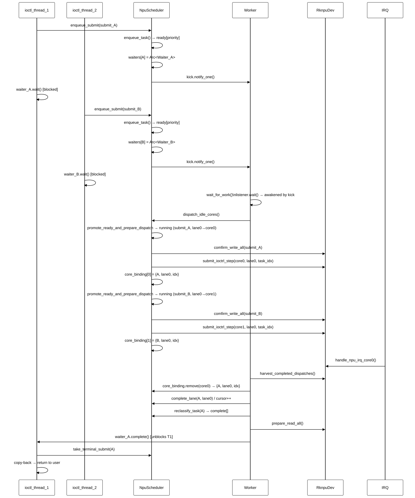

RKNPU技术报告
一、项目内容与用途
这个项目的对象是 RK3588 NPU 驱动及其在 StarryOS 上的系统集成。它的作用：让上层推理程序、benchmark 或后续 runtime 能稳定地把任务提交给 NPU 执行，而不是只能依赖 Linux 或闭源用户态库环境。
当前驱动已经覆盖了几条基础链路：
- 寄存器/MMIO 访问：能够映射 RK3588 RKNPU 三个 core 的寄存器窗口，并通过寄存器接口完成 PC、CNA、DPU 等硬件模块的配置。
- GEM/DMA 缓冲管理：支持用户态创建、映射、同步和销毁 NPU 可访问的 DMA buffer。
- 任务描述符组织：支持
RknpuTask、regcmd、输入/权重/输出 buffer 的组合，并把这些描述符作为 submit 的基本执行单元。 - ioctl 服务：支持
Submit、MemCreate、MemMap、MemDestroy、MemSync、Action等 RKNPU 专用入口。 - 中断与 completion 回收：IRQ handler 负责读取硬件完成状态，调度器再根据 core 绑定关系把 completion 还原到具体任务。
- 多核调度：在一个 submit 中按 lane 把任务切到不同 core，同时支持多个 submit 进入队列等待。
二、本轮二次开发重点
2.1 支持 RK3588 三核 NPU 执行
RK3588 的 RKNPU 不是单个执行核心，而是三个可以并行工作的 NPU core。早期单核路径只证明了“任务能跑”，但没有把硬件并行能力发挥出来。本轮二次开发首先把提交路径改成能够识别 core_mask 和 subcore_task，让同一批任务可以被拆成多个 lane 分发到不同 core。
当前的三核执行模型可以概括为：
- 用户态仍然通过一个
RknpuSubmit提交任务批次。 subcore_task[]描述每个 lane 的任务范围；如果用户态没有显式填写 lane，队列层会把任务归一化到默认 lane。core_mask决定这次 submit 允许使用哪些物理 core，例如0x1表示只用 core0，0x7表示三个 core 都可用。- 调度器为每个空闲 core 挑选一个可派发 lane，然后调用底层 driver 对该 core 编程。
- core 完成后，IRQ 路径发布 raw completion，调度器再回收并推进对应 lane 的 cursor。
这部分工作的重点不是简单把同一条命令发三遍，而是要保证每个 core 跑的是正确的 task slice，同一条 lane 不会被重复派发，completion 也能回到正确的 submit 和 task index。只有这些状态对齐，多核数据才有意义。
2.2 任务调度器与多线程共享 NPU
第二个是任务调度器。NPU 是共享硬件资源，不能让多个线程各自直接碰寄存器，否则很容易出现 core 状态、任务进度和 completion 归属混乱。当前实现保留外部的 blocking submit 语义，但内部引入了调度队列和 worker 线程：
- 调用线程进入
Submitioctl 后，不直接独占 NPU 跑完整批任务，而是把 submit 放进 scheduler。 - 每个 submit 有自己的 waiter。调用线程只等待“自己的 submit 是否完成”。
- 全局 worker 负责真正的 dispatch 和 harvest。它被 kick 唤醒后，先回收已完成 core，再给空闲 core 下发新任务。
- scheduler 维护 ready、running、complete 这些状态。ready 表示还没开始跑的 submit，running 表示已有 lane 在跑或还有 lane 可继续派发，complete 表示终态结果等待 ioctl 路径取回。
- 如果 running submit 还有可派发 lane，会优先继续推进 running，而不是马上切到一个全新的 ready submit。这样可以减少同一 submit 内部的等待空洞。
service 层的 blocking submit 通过 per-submit waiter 阻塞：调用线程在 wait_for_submit() 上等待，直到 worker 将该 submit 移入 complete 并调用 waiter.complete() 唤醒它，再通过 take_terminal_submit() 取回终态结果。多个用户线程同时提交 NPU 任务时，线程可以各自阻塞在自己的 waiter 上，NPU 由全局 worker 串行管理硬件状态并并行利用多个 core。换句话说，NPU 对外看起来仍是阻塞式设备，对内已经具备”多线程共享、队列化提交、三核流式执行”的基础形态。
这版调度器的价值就在这里：它没有把用户态 ABI 改复杂，但把内核侧的执行模型从"谁提交谁跑"推进到了"统一排队、统一分发、统一回收"。
2.3 引入 rknpu-regs 寄存器库
寄存器访问层也做了工程化整理，引入了基于 SVD / svd2rust 生成的 drivers/rknpu-regs。驱动开发里手写寄存器偏移和位域非常容易出错，尤其是 NPU 这种寄存器块多、字段分散、不同 core 地址重复的硬件。
rknpu-regs：
- 用类型化寄存器接口替代裸地址和 magic number。
- 减少手工抄写偏移、位宽、mask 时的错误。
- 让寄存器访问代码更接近硬件文档，后续查错更方便。
- 把”访问寄存器”和”调度策略”拆开，避免调度器里混入大量底层地址细节。
三、benchmark 测试内容
3.1 测量范围与方法
本次性能数据来自 log.txt 中运行的 ./core_scaling_benchmark，对应测试程序是 core_scaling_benchmark.c。
测量窗口：仅覆盖 blocking DRM_IOCTL_RKNPU_SUBMIT 的完整往返时间，即 submit ioctl 从进入到返回。operand packing 和 regcmd generation 单独打印，不计入对比窗口。因此下面的数据反映的是 driver submit、scheduler dispatch/harvest、硬件执行和 completion 回收的综合耗时
指标定义：
speedup = T_1core / T_3core（同一批任务 1-core 与 3-core 的平均 submit 时间之比）parallel efficiency = speedup / 3（理想三核加速为 3x，efficiency 衡量实际利用率）GFLOP/s = 2 × GMAC/s（1 MAC = 1 乘 + 1 加 = 2 FLOP）jitter span = (T_max - T_min) / T_avg（衡量单次 submit 时间的波动幅度）
正确性校验：第一轮 measured round 会对输出抽样与 CPU reference 比较，并检查每个 task 的 int_status == 0x300。这是抽样校验，不是全量验证。
3.2 测试环境
- 硬件平台：RK3588 SoC（三核 NPU）
- 操作系统：StarryOS比赛版本
- Benchmark 程序：
core_scaling_benchmark（4 场景 × 2 operand 模式） - 测量轮次：每场景 warmup 2 轮 + measured 5-12 轮（场景相关）
- 频率/电源控制：未控制（默认 governor）
- 热稳态控制：未控制
- IRQ 亲和性：未设置
3.3 测试场景
每个场景一般又分两种 operand 模式：
shared-operands：所有任务复用同一份 input/weight，只有 output slice 私有。这更偏向测试调度和计算本身，DMA footprint 较小。unique-operands：每个 task 有自己的 input/weight/output slice。这更接近多任务独立数据的情况，内存占用和准备成本更高。
测试程序里固定了四个场景。它们不是随便取的矩阵形状，而是分别压不同瓶颈：
| 场景 | 矩阵形状 | shared tasks | unique tasks | warmup | measured | 主要验证点 |
|---|---|---|---|---|---|---|
tiny_dispatch | M=4 K=32 N=16 | 96 | 96 | 2 | 12 | 小矩阵，submit/scheduler 固定开销占比最高，用来观察多核调度在短任务下是否会被开销吞掉。 |
mid_balanced | M=64 K=512 N=512 | 48 | 12 | 2 | 8 | 中等矩阵，调度开销和计算吞吐都会影响结果，用来判断调度器是否进入稳定可用区间。 |
throughput_heavy | M=128 K=1024 N=1024 | 24 | 4 | 2 | 5 | 大矩阵，目标是把瓶颈推向 NPU 计算吞吐；unique 任务数较少，是为了控制 DMA footprint。 |
llama_decode_like | M=1 K=4096 N=4096 | 48 | 0 | 2 | 8 | 低 M、高 K、高 N，接近 LLM decode 阶段线性层投影形状，更关注长任务延迟和尾部波动。 |
tiny_dispatch 主要看调度器的“底噪”。如果这个场景三核退化，说明每次 dispatch、IRQ 回收、worker yield、waiter 唤醒的成本已经压过了硬件并行收益。它使用 96 个 task，任务数足够多，可以持续给三个 core 喂任务，但单 task 计算量非常小。
mid_balanced 是更接近日常 benchmark 的中间档。shared 模式有 48 个 task，unique 模式只有 12 个 task，因为 unique 模式每个 task 都有独立 input/weight/output，内存占用增长更快。这个场景用来观察调度器在“既有计算量、又有一定任务数量”的情况下是否稳定。
throughput_heavy 则故意把矩阵放大。shared 模式有 24 个 task，unique 模式只有 4 个 task。这里不是为了追求任务数，而是为了让每个 task 本身足够重，看三核并行能否把 GFLOP/s 拉上去。unique 任务数少也会暴露另一个问题：当任务批次太短时，三核并行窗口会变窄。
llama_decode_like 只跑 shared 模式，unique tasks 在测试程序里设为 0，所以日志里会跳过 unique。它模拟的是 decode 阶段常见的投影类 workload：M 很低，但 K 和 N 很大。这个场景不一定追求最高吞吐，更关心一次 submit 的阻塞时间能不能被多核明显压下来。
输入和权重不是随机数，而是由 deterministic_input_value() 和 deterministic_weight_value() 生成的整数模式；输出会抽样和 CPU reference 比较。每个 task 的 int_status 也会检查，期望值是 0x300。任务分发时，distribute_tasks_to_cores() 会按 core 数把 task range 平均切到 subcore_task[]，1 core 时只填 core0，3 cores 时填 core0/core1/core2 并设置对应 core_mask。因此这个 benchmark 测到的不是单纯的 C 程序循环，而是完整覆盖了 submit ABI、调度器 lane 切分、三核 dispatch、IRQ completion 和 copy-back 这些路径。
四、benchmark 结果与性能分析
4.1 总体结论
所有有效场景里，三核都比单核快，没有出现最终退化。最好的场景是 llama_decode_like/shared-operands，从 344.354 ms 降到 137.000 ms，speedup 达到 2.514x，parallel efficiency 为 83.78%。这说明调度器已经能把 RK3588 三个 NPU core 的并行能力用起来。
三核都有正收益,但大多数场景的 parallel efficiency 仍在 57% 到 68% 左右
4.2 结果汇总
| 场景 | 模式 | 任务数 | 1-core avg submit | 3-core avg submit | speedup | parallel efficiency |
|---|---|---|---|---|---|---|
tiny_dispatch | shared | 96 | 2.533 ms | 1.423 ms | 1.780x | 59.32% |
tiny_dispatch | unique | 96 | 3.478 ms | 1.739 ms | 2.000x | 66.67% |
mid_balanced | shared | 48 | 32.496 ms | 18.746 ms | 1.733x | 57.78% |
mid_balanced | unique | 12 | 10.459 ms | 6.065 ms | 1.724x | 57.48% |
throughput_heavy | shared | 24 | 42.656 ms | 20.864 ms | 2.044x | 68.15% |
throughput_heavy | unique | 4 | 6.781 ms | 3.939 ms | 1.721x | 57.38% |
llama_decode_like | shared | 48 | 344.354 ms | 137.000 ms | 2.514x | 83.78% |
4.3 tiny_dispatch：小任务也有明显收益
tiny_dispatch 的矩阵规模很小，单 task 的计算量低。当前结果里，shared 模式从 2.533 ms 降到 1.423 ms，unique 模式从 3.478 ms 降到 1.739 ms。这说明当前调度器的固定开销没有大到完全吞掉三核收益，小任务也能加速。
但是这个场景的性能不能过度解读。shared 模式 parallel efficiency 是 59.32%，unique 模式是 66.67%，距离理想三核加速2x以上仍有明显差距。小任务下，每次 dispatch 和 completion 的成本占比很高，真正花在矩阵计算上的时间太短。后续如果要优化小任务，需要减少每 task 的下发/回收成本，或者把更多小 task 合并成更粗粒度的 batch。
4.4 mid_balanced：中等任务证明调度器进入显著加速区间
mid_balanced 是这次比较有代表性的场景。shared 模式中，1 core 平均 submit 为 32.496 ms，3 core 为 18.746 ms，speedup 为 1.733x。unique 模式中，1 core 为 10.459 ms，3 core 为 6.065 ms，speedup 为 1.724x。
这个结果说明，调度器在中等任务规模下已经进入稳定可用区间。两种 operand 模式都接近 1.7x，没有只在某一种特殊数据复用方式下才有效。它也说明当前瓶颈不只是数据准备，因为 benchmark 的 measured window 没把 operand packing 算进去；submit 阶段本身确实因为多核并行缩短了。
4.5 throughput_heavy：吞吐型任务收益更明显
throughput_heavy 的 shared 模式从 42.656 ms 降到 20.864 ms，speedup 达到 2.044x，parallel efficiency 为 68.15%。同时 GFLOP/s 从 151.033 提升到 308.786，基本也是 2.044x 的增益。这个场景最能说明三核调度的直接价值：任务足够重之后，固定调度开销被摊薄，硬件并行执行开始成为主导因素。
unique 模式任务数只有 4 个，这是为了控制 DMA footprint。它仍然从 6.781 ms 降到 3.939 ms，speedup 为 1.721x。任务数少会限制三核利用率，因为 worker 能同时派发的 lane 数量和后续补发机会都变少。这个结果没有 shared 模式好，但仍然是稳定正收益。
4.6 llama_decode_like：长任务场景收益最好，但 jitter 较大
llama_decode_like 是本次最强的结果。它的 shared 模式从 344.354 ms 降到 137.000 ms，speedup 达到 2.514x，parallel efficiency 为 83.78%，GFLOP/s 从 4.677 提升到 11.756。这说明在低 M、高 K、高 N 的投影类 workload 下，当前三核调度能显著降低 submit 阻塞时间。
但这个场景也反应出在3-core 的 min/max 为 126.027 / 139.504 ms时，jitter span 达到 9.84%，明显高于 1-core 的 0.03%。也就是说，平均值很好，但三核路径下仍有一定波动。可能原因包括 worker harvest 时机、core completion 到达顺序、yield 后重新调度的时间差，以及更长任务下不同 core 之间的尾部等待。
4.7 这轮结果说明
- 三核支持已经有效。所有有效 benchmark 场景都显示 3-core submit 时间低于 1-core。
- 调度器设计已在真实 benchmark 中转化为性能收益。ready/running 队列推进、core binding 和 completion 回收这套机制能够有效利用三核并行。需要注意的是，当前 benchmark 验证的是单次 blocking submit 内的多核扩展收益，而非多线程并发提交的竞争场景——后者是调度器设计支持的能力，但尚未专项测试。
- 软件开销仍然存在。大多数场景没有接近理想
3x，说明 dispatch、harvest、同步和调度唤醒成本仍然需要优化。
五、功能模块分层与实现思想
当前实现可以按从上到下的链路理解。
最上层是用户态 benchmark 或 runtime。它负责准备输入、权重、输出、regcmd 和 task array，然后通过 ioctl 提交任务。benchmark 还负责构造不同矩阵规模和不同 operand 共享模式，用来观察调度器在不同负载下的行为。
再往下是 ioctl / service 边界层。它负责把用户态传进来的 RknpuSubmit、RknpuTask[] 和内存管理请求拷入内核，转换成驱动内部可以处理的数据。这里不应该保存太多调度状态，否则 ioctl 层会变成第二个 scheduler。
scheduler 层负责 submit 生命周期。它维护 ready、running、complete 三个 bucket，管理每个 submit 的 waiter，也负责唤醒全局 worker。waiter 和 kick 的职责要分清：waiter 是 per-submit 的，回答"这个 submit 完成了吗"；kick 是全局 worker 信号，回答"现在有没有新活需要 worker 醒来处理"。这两个东西混在一起，调度器会很难读，也很容易漏唤醒。
driver / dispatch / IRQ 层负责硬件事实。driver 给某个 core 编程，IRQ handler 读取和清除硬件中断，completion 只表示"某个 core 有原始完成状态"。至于这个 completion 属于哪个 submit、哪个 lane、哪个 task index，应由 scheduler 根据 core_binding 还原，而不是让 driver 反向保存一堆队列语义。
最底层是寄存器访问层，也就是 rknpu-regs。它提供类型化 register API。调度器不应该知道太多寄存器细节，寄存器层也不应该知道队列策略。这个分层让后续工作可以分开推进：寄存器访问继续补全，调度策略继续优化，ioctl ABI 保持稳定。
六、当前限制与问题分析
- 三核收益仍然低于理想值。除了
llama_decode_like达到83.78%efficiency，多数场景仍在57%到68%左右。说明当前并行并不是完全线性扩展，软件路径还有明显成本。 - 小任务场景仍然敏感。
tiny_dispatch虽然这次有正收益，但它的绝对 submit 时间只有毫秒级，任何一次额外调度、yield、IRQ 回收或锁竞争都会改变结果。后续如果要跑大量小算子，必须继续压低固定开销。 - 3-core 路径存在尾延迟波动。
llama_decode_like的平均 speedup 很好，但 3-core jitter span 到了9.84%。这提示我们不能只盯 avg submit，还要看 min/max 和尾延迟。
七、调度器的执行时序
本节描述调度器的内部机制和执行流程，内容基于 drivers/rknpu/src/service/scheduler.rs 和 drivers/rknpu/src/task/taskqueen.rs 的实现。
7.1 核心数据结构
NpuSchedulerState（调度器全局状态，受单一 mutex 保护）：
tasks: BTreeMap<RknpuQueueTaskId, RknpuQueueTask>— 所有活跃 submit 的唯一所有者ready: BTreeMap<i32, VecDeque<RknpuQueueTaskId>>— 按优先级分桶，尚未开始执行的 submitrunning: BTreeMap<i32, VecDeque<RknpuQueueTaskId>>— 按优先级分桶，已有 lane 在执行或还有 lane 可派发的 submitcomplete: BTreeMap<RknpuQueueTaskId, RknpuQueueTask>— 已终态，等待 ioctl 路径取回core_binding: BTreeMap<usize, CoreRunBinding>— 物理 core →{task_id, lane_slot, task_index}的归属映射waiters: BTreeMap<RknpuQueueTaskId, Arc<W>>— per-submit 的阻塞等待器
RknpuQueueTask（单个 submit 的运行时状态）：
lane_isrun: [bool; 5]— 每条 lane 是否有任务在飞subcore_cursors: [u32; 5]— 每条 lane 已完成的 task 数量last_error: Option<RknpuError>— 错误状态
submit 的生命周期状态（ready/running/complete）不是单独维护的枚举，而是由 lane_isrun、subcore_cursors、last_error 的组合派生，并通过 reclassify_task() 决定 submit 应归入哪个 bucket。
7.2 调度策略
running-before-ready：dispatch_idle_cores() 为每个空闲 core 选择候选时，优先从 running bucket 中找可继续派发的 submit（prepare_dispatch_from_running），只有当没有 running submit 可用时，才从 ready 提升新 submit（promote_ready_and_prepare_dispatch）。这减少了同一 submit 内部的等待空洞，但对等待中的 ready submit 不是严格公平的。
内存同步边界：
comfirm_write_all()：在一次dispatch_idle_cores()调用中，对某个 submit 首次派发前调用，确保 DMA 写入对硬件可见prepare_read_all()：在 terminal submit 唤醒 waiter 前调用，确保硬件写回对 CPU 可见
7.3 图一：Submit 生命周期
注意:函数签名可能随着更新而改变实际函数签名以代码仓库中为准，此处只做流程解读
下图展示单个 submit 从 ioctl 入队到 copy-back 返回的完整路径，以及多个并发 submit 线程如何通过独立 waiter 共享同一个 worker。

7.4 图二：Worker 主循环与多核派发
注意:函数签名可能随着更新而改变实际函数签名以代码仓库中为准，此处只做流程解读
下图展示 worker 线程的主循环结构，以及 harvest 和 dispatch 如何交替推进多个 submit 的执行。
